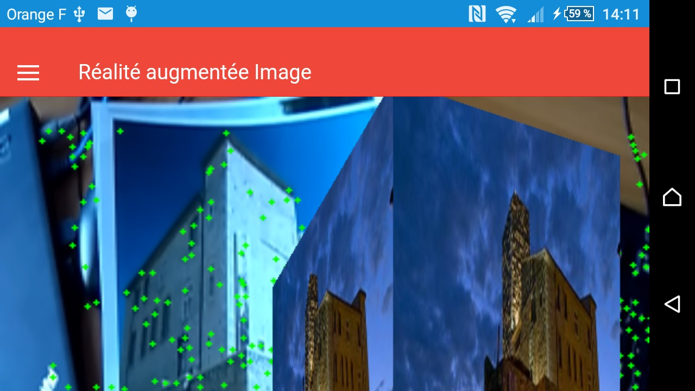

Réalité augmentée
DAM
Par Bruce LANE
Définition
La réalité augmentée ajoute des éléments virtuels sur un contenu réel.
Bien que chacun de nos 5 sens peut être augmenté, c'est le plus souvent une application qui superpose un contenu 2D/3D à une scène réelle issue d'une caméra, en temps réel.
 En pratique, il s'agit d'obtenir le flux d'une caméra, détecter la position et l'angle, puis afficher du contenu numérique. A chaque itération, les objets sont placés, ce qui donne une impression de temps réél.
Types de réalité augmentée
- Réalité augmentée avec TAG
- Réalité augmentée avec IMAGE
Réalité augmentée TAG

Réalité augmentée IMAGE
Choix des outils
- Git
- Angular js
- Apache Cordova
- Ionic
Git - rappels
Etapes:
- Installer git si besoin, en option Tortoisegit
- Créer un compte sur github.com
- Faire un fork de https://github.com/brucelane/CoursAR
- Cloner son fork:
git clone https://github.com/votrenom/CoursAR.git
Flux de travail
Avant de commencer, récupérer les dernières modifications du repo parent
Repo parent
A faire une fois:
Configurer le chemin du repo parent (brucelane/CoursAR) pour les pull requests:
git remote add upstream git://github.com/brucelane/CoursAR.git
Récupérer les changements
git fetch upstream
git merge upstream/master masterModifier son code
Puis:
git add fichiers ou dossiers (si nouveau fichiers)
git commit -m "description"
git pushInstallation pour le développement
installer node.js
npm install -g cordova ionic
ionic start NomDuProjet sidemenu (choix du modèle: sidemenu ou tabs ou blank)
cd NomDuProjet
ionic serve
Ajout plateforme Android
ionic platform add android
ionic build android
ionic run android
(remplacer android par ios si plateforme iOS)
Ajout sur Play store
ionic run android --release
// http://developer.android.com/tools/publishing/app-signing.html
keytool -genkey -v -keystore coursar.keystore -alias coursar -keyalg RSA
-keysize 2048 -validity 10000
jarsigner -verbose -sigalg SHA1withRSA -digestalg SHA1 -keystore coursar.keystore
coursar-unaligned.apk coursar
jarsigner -verify -verbose -certs coursar-unaligned.apk
// zipalign dans C:\Program Files (x86)\Android\android-sdk\build-tools\23.0.1
zipalign -v 4 coursar-unaligned.apk coursar20160314.apk
Création du projet
ionic start NomApplication https://github.com/nomutilisateur/CoursAR